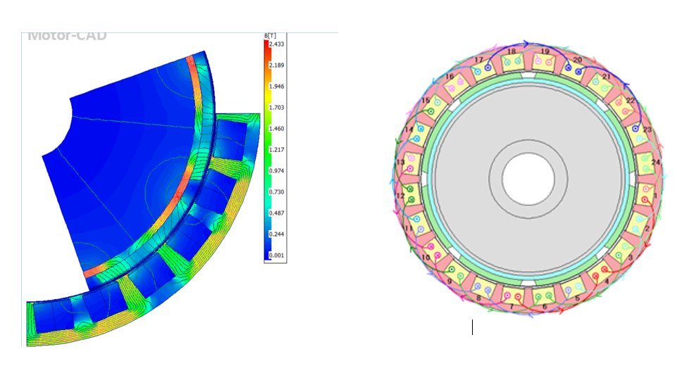
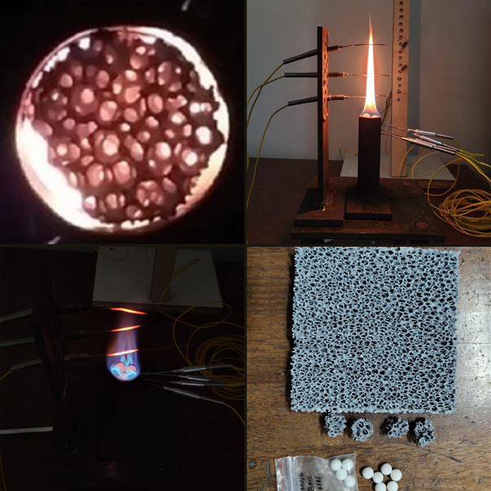

Personal Projects
Special team & industry projects are not listed here.

Self-Stabilizing Spoon for Parkinson's Patients — Prototype Patent
MPU-6050 IMU + dual-axis servo gimbal to counter hand tremors in real time. Kalman filter & quaternion-based control on Arduino Nano. PCB redesign & downsizing ongoing.

PMSM Design & Simulation via FEA
Performance characteristics of a PMSM for a rear-wheel-drive EV during transient acceleration. Analysed using Ansys Motor-CAD.

Research · Paper in PrepPorous Media Combustion Research
Investigated ultra-lean flame stabilisation in porous media burners using acoustic signal processing as a non-intrusive diagnostic. Al₂O₃ foam achieved a 3.2× improvement in lean operating range over conventional burners.

Automated Vertical Aeroponics System
Aeroponic tower suspending roots mid-air with fine NPK mist. ESP32-driven sensing, timed pump cycles, and live Wi-Fi dashboard for remote monitoring.
LabVIEW Sensor Interfacing for Power Electronics
Integrated LabVIEW sensor interfacing in the Power Electronics Lab with Dr. R Gunabalan. Presented at two international conferences.

Marine ADAS Simulator
Portable Mini 'Altoids' Guitar Amp — LM358
Ongoing build — drop in soon. Will upload full build content & project page once completed.
Ongoing builds: Cyberdeck, LM386 Portable Guitar Amp, and a Custom Quadruped Robot — look out for these!